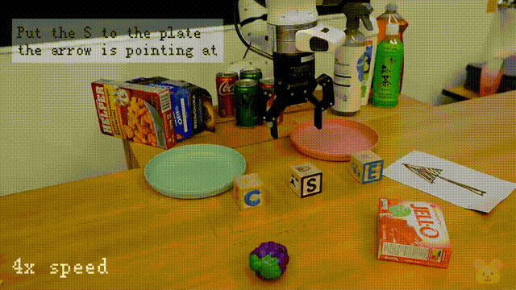
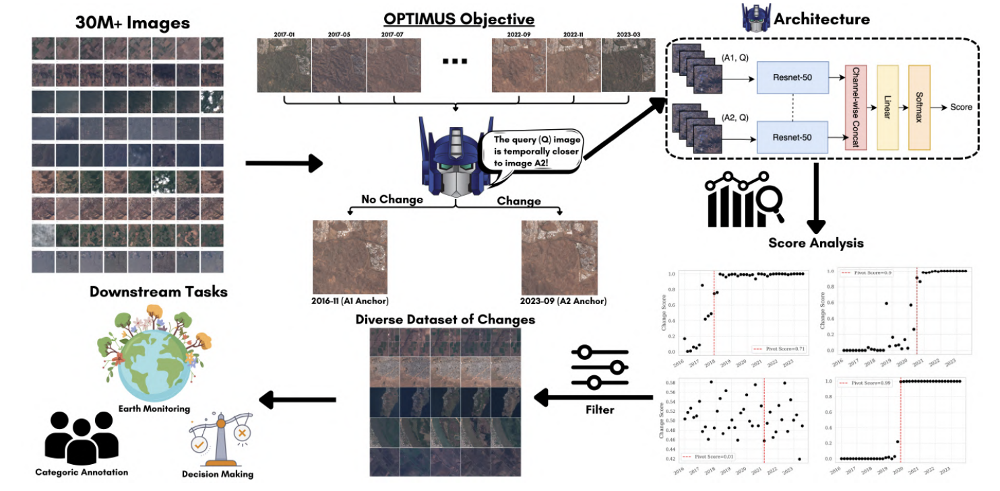

Support-Constrained RL Enables Real-World Policy Improvement without Real-World Experience Raymond Yu*, William Huey*, Mustafa Mukadam, Anusha Nagabandi, Abhishek Gupta Preprint 2026 websitepaper
Unified World Models Chuning Zhu, Raymond Yu, Siyuan Feng, Benjamin Burchfiel, Paarth Shah, Abhishek Gupta RSS 2025Best Paper, ICML 2025 World Modeling Workshop websitecode
DRAWER: Digital Reconstruction and Articulation With Environment Realism Hongchi Xia, Entong Su, Marius Memmel, Arhan Jain, Raymond Yu, Numfor Mbiziwo-Tiapo, Ali Farhadi, Abhishek Gupta, Shenlong Wang, Wei-Chiu Ma CVPR 2025 websitecode
 HAMSTER: Hierarchical Action Models For Open-World Robot Manipulation Yi Li, Yuquan Deng, Jesse Zhang, Joel Jang, Marius Memmel, Raymond Yu, Caelan Garrett, Fabio Ramos, Dieter Fox, Anqi Li, Abhishek Gupta, Ankit Goyal ICLR 2025 websitecode
 OPTIMUS: Observing Persistent Transformations in Multi-temporal Unlabeled Satellite-data Raymond Yu*, Paul Han*, Josh Myers-Dean, Piper Wolters, Favyen Bastani WACV 2025 paperdataset